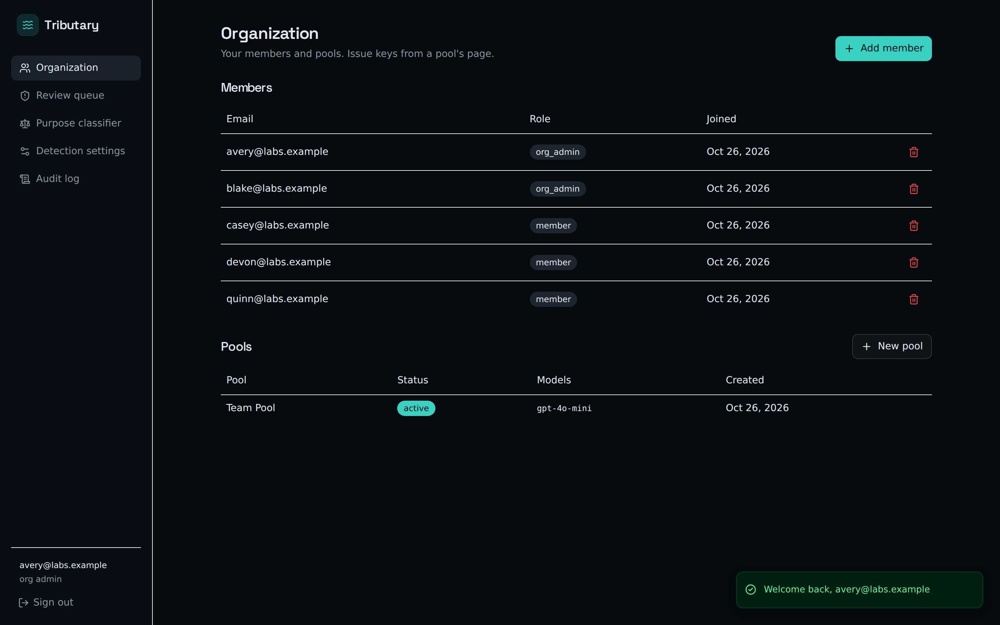
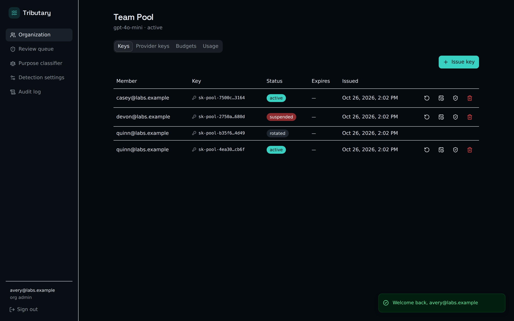
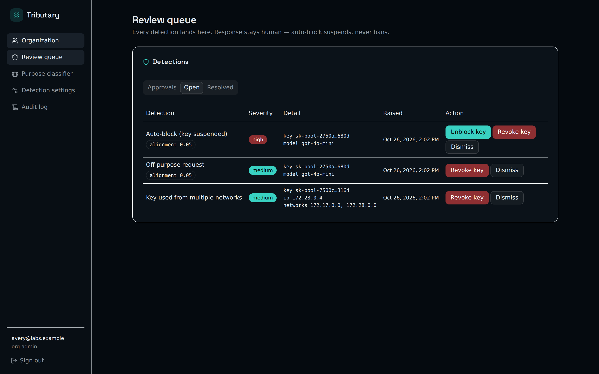
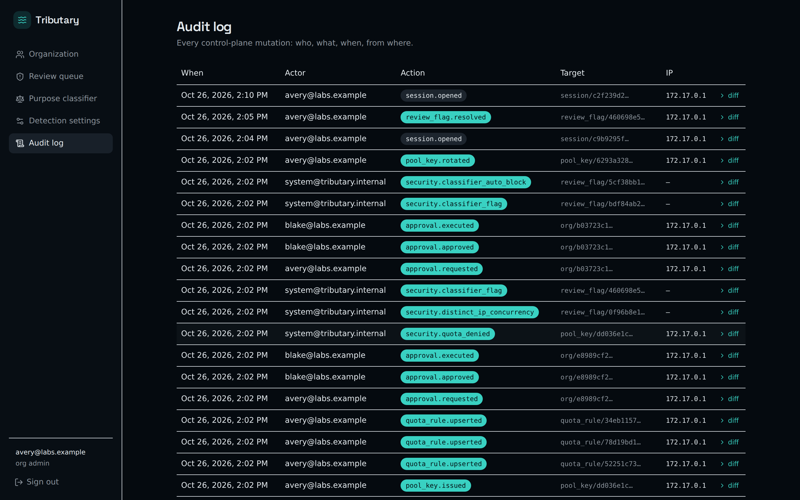

Per-member keys
Issue, rotate, expire, IP-allowlist. A member's key never touches the provider credential — and the raw key is shown exactly once, at issue time.

Self-hosted · Source-available · v0.1.1
Tributary is a gateway you run yourself. Upstream, one pooled provider key — OpenAI and Gemini keys both work, along with any OpenAI-compatible endpoint; downstream, a personal key for every member. Each request is metered, quota-checked, and IP-fingerprinted before it leaves your building.
Self-host it free today Read the code

Issue, rotate, expire, IP-allowlist. A member's key never touches the provider credential — and the raw key is shown exactly once, at issue time.

Key used from two networks? Off-purpose requests? Auto-block suspends the key and waits for a person — detection never silently bans anyone.

Every control-plane mutation — who, what, when, from where. Quota denials, rotations, approvals: all on the record.

One container, one volume, SQLite inside — Docker does the rest. (POSIX shell; Windows users: WSL.)
git clone https://github.com/Phat1911/Tributary.git && cd Tributary
cp deploy/.env.example .env
echo "TRIBUTARY_MASTER_KEY=$(openssl rand -hex 32)" >> .env
docker compose up -d
docker exec -it -e TRIBUTARY_DATABASE_URL=sqlite:///data/tributary.db \
tributary tributary create-admin --email you@example.com --password '<generated>'
Then log in at http://localhost:8111. From there the
ladder is yours to climb: this machine → your LAN → your
tailnet → a public VPS — see the
sharing ladder
in the deploy guide.
Every security finding this project discovers — fixed or still open — is published in AUDIT.md. If you find a hole, it is yours to report: private disclosure, finder credit, no auto-ban.
What comes next: the network layer — many operators, one settlement rail (V2).